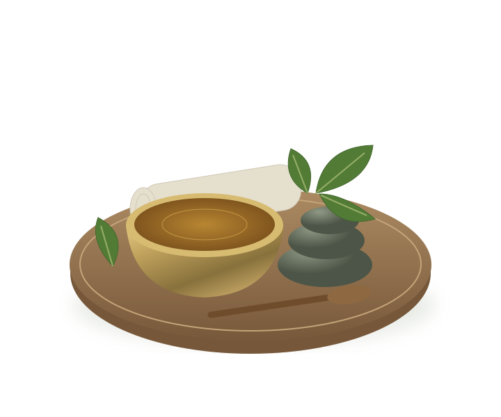

Rooted in nature.
Guided by tradition.
Ayurveda considers the relationship between body, mind, nourishment and rest. At Nallayil, that understanding shapes an individual approach to care.
Discover the gentle art of Kerala Ayurveda. Personal care, rooted in tradition and shaped around you.

A tradition of healing.
A personal approach to your wellbeing.
Nallayil Ayurveda brings together classical Kerala practice and focused clinical care across Malappuram and Kozhikode. Each journey begins with an attentive consultation and a thoughtful path back to balance.

Ayurveda considers the relationship between body, mind, nourishment and rest. At Nallayil, that understanding shapes an individual approach to care.
Warm herbal oils, traditional bodywork and skilled hands come together with a quieter daily rhythm. Every treatment starts with a consultation.
Discover our approach ↗Ancient vital pressure point therapy for immediate pain relief and anatomical re-alignment.
02Complete conservative non-surgical management for Slip Disc, Sciatica, Cervical & Lumbar Spondylosis.
03Five-fold bio-purification to eliminate deep seated cellular toxins and rejuvenate body vitality.
04Holistic care for Osteoarthritis, Rheumatoid Arthritis, Gout, and severe Knee Pain.
Warm herbal oil. The care of skilled hands. Time to pause. Discover a treatment experience grounded in Kerala’s Ayurvedic traditions.
Explore the experience ↗Traditional preparations and everyday rituals, selected with your care in mind.
Kashayams, oils and churnams informed by traditional Ayurvedic knowledge.
Thoughtfully applied oils accompany traditional bodywork and restorative therapies.
A considered stay, Ayurvedic meals and a gentle routine support the therapeutic process.
Illustrative wellness photography from the existing collection; not photographs of Nallayil’s centers.
Three centers. One shared philosophy of personal, attentive Ayurvedic care.
Near ALP School, Mullampara, Manjeri, Malappuram, Kerala – 676122
Mon - Sun: 08:30 AM - 08:00 PMPacheerippara, Kariavattom, Pattikkad, Perinthalmanna, Kerala – 679325
Open 24/7 (In-Patient & Out-Patient)Byepass Junction, Ramanattukara, Kozhikode, Kerala – 673633
Mon - Sat: 09:00 AM - 07:30 PMBAMS, Chief Marma & Spine Specialist
Marma Chikitsa, Spine & Disc Prolapse, Joint Pain
Manjeri & PerinthalmannaBAMS, MD (Ayur - Panchakarma)
Panchakarma Detox, PCOD, Infertility & Women's Care
Perinthalmanna Ayur HomeBAMS, Fellow in Orthopedic Rehabilitation
Osteoarthritis, Knee Pain, Sciatica, Neck Pain
Manjeri & RamanattukaraBAMS, Certified Stress & Mind Wellness
Migraine, Insomnia, Skin & Allergy Management
Ramanattukara & OnlineExperiences shared by the Nallayil community. Individual treatment experiences vary.
Marma Chikitsa is a specialised Kerala discipline centred around vital points connecting nerves, muscles and bones. Our doctors use measured pressure and therapeutic preparations as part of a considered care plan.
Choose your center, physician and preferred date and time, then review and send your request on WhatsApp. Reception will confirm availability and your appointment. You can also call +91 99610 03718.
Ayur Home in Pacheerippara, Pattikkad offers residential in-patient care with traditional cottages, doctor and nursing support, Ayurvedic meals and treatment suites. Contact our team to discuss your stay.
Nallayil offers video consultations for patients across India and abroad. Select Online Video Consultation when making your request; our team will help arrange the next step.
A conversation is a lovely place to start.
Our team will help you find the right next step.